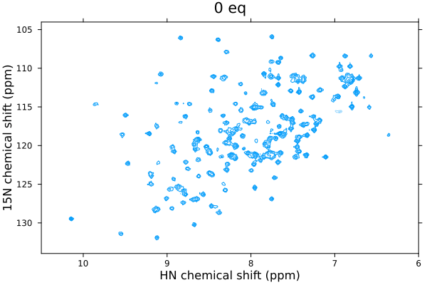

Animating spectra
The plot recipes defined within NMRTools provide an easy way to generate animations of spectral data, using the @animate macro defined within the Plots package. A couple of examples are provided below.
Phosphorylation kinetics
First, load in some data. This pseudo-3D kinetic data - a series of 1H,15N SOFAST-HMQC spectra - showing the progressive phosphorylation of cJun by JNK1 kinase. Read more about the paper here: Waudby et al. Nat Commun (2022).
using NMRTools, Plots
spec=exampledata("pseudo3D_kinetics") Downloading artifact: pseudo3D_kineticsThe data have been processed in Topspin using ftnd 3 and ftnd 2, so that the final dimension of the 3D represents the phosphorylation time. Each 2D plane took 2 minutes to acquire, and there was an initial delay of 4 min between adding the kinase and recording the first free induction decay. We need to calculate a list of times from this information, that we can use to label the animation:
# get number of time points
nt = size(spec,3)
# calculate a list of measurement times
# experiment was recorded with 2 min per spectrum, plus initial dead-time of 4 min
tmin = LinRange(0, 2*(nt-1), nt) .+ 4
thr = tmin / 60256-element LinRange{Float64, Int64}:
0.0666667, 0.1, 0.133333, 0.166667, 0.2, …, 8.46667, 8.5, 8.53333, 8.56667Now we can generate the animation, by looping over each point in the time series with the Plots @animate macro, then saving as an animated gif.
anim = @animate for i=1:nt
# generate a nice title with the time rounded to 1 decimal place, e.g. "Time elapsed: 0.1 hr"
titletext = "Time elapsed: $(round(thr[i],digits=1)) hr"
plot(spec[:,:,i], title=titletext)
end
# save as an animated gif
gif(anim, "kinetics.gif", fps=30)[ Info: Saved animation to /home/runner/work/NMRTools.jl/NMRTools.jl/docs/build/kinetics.gif
2D titration
First, load in some data - as described in the tutorial on plotting.
spectra2d = exampledata("2D_HN_titration") Downloading artifact: 2D_HN_titrationNow loop over the spectra to produce the animation:
refspec = spectra2d[1]
anim=@animate for spec in spectra2d
plot(spec, xlims=(6,10.5), title=label(spec), normalize=refspec)
end
gif(anim, "titration.gif", fps=8)[ Info: Saved animation to /home/runner/work/NMRTools.jl/NMRTools.jl/docs/build/titration.gif
The normalize=refspec parameter scales all spectra relative to the reference spectrum, defined on the first line as the first spectrum in the titration series. This ensures that contour levels are directly comparable across the different spectra. This normalization automatically compensates for differences in acquisition parameters such as number of scans and receiver gain that would otherwise affect absolute intensities.